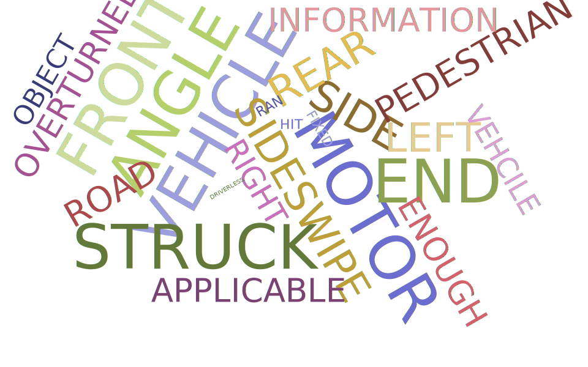

Seattle has a storied history with bicyclists, will 20 new miles of pedestrian only roadways help?
Streets permenantly closed to traffic in lieu of the coronavirus pandemic have drawn more people than ever to pedestrian centered activities, but accidents are still a problem.
By: Sammi Bushman
Seattle's officials pledged major changes for cyclists this May, after the Coronavirus pandemic saw a 57% drop in vehicle traffic within city limits. In April, Seattle launched “Stay Healthy” streets, which made roadways with motorized vehicles car free. The closures have been such a success that 20 miles are now set to become permanent, after a 300% increase in bicycle traffic was noted after cars went away.
But for years, Seattle has been criticized that bike infrastructure development isn’t keeping up with the needs of cyclists. A 2017 report by the Washington State Department of Transportation found the number of pedestrian deaths including cyclists in Washington State nearly doubled over the previous decade.
Between 2004 and 2019, there were 5,906 bicycle-involved accidents in Seattle
5, 210 resulted in injury
27 were fatal
While the city of Seattle is actively making changes to ensure safety for pedestrians and cyclists
Accident numbers have stagnated at rates inconsistant with population and popularity increase
Total bike accidents in Seattle
Mapping Accidents
Seattle experienced an 18% increase in bicycle traffic in 2019 before the coronavirus pandemic saw widespread unemployment and reduced traffic. In the same year, two people died in bicycle accidents. In 2012, Seattle Adopted the Target Zero framework, which aims to have zero traffic fatalities by 2030. A 2019 report indicated that despite legislation aimed at directing more money towards pedestrian improvement, trends were going the wrong way.
Seattle has identified high impact areas of the city streets that pose an increased risk to non-vehicles. The majority of incidents occur in these high impact zones.
2019 Target Zero identified accidents as they correspond to high risk areas:
Statewide, 89% of fatal crashes and 95% of serious injury crashes occur within a half-mile of a local destination.
Over half of all injuries have occurred during the day since 2004
And almost all involved cars
Accidents that resulted in injury by type:
Bike lanes and infrastructure can help, but is it enough?
Infrastructure
Seattle has seen an influx in transit oriented development associated with increased public transit availability, particularly the Light Rail. A 2019 Target Zero report recognized that quote, “In 52% of these pedestrian and bicyclist crossing fatalities and serious injuries, there were no stop signs or traffic signals requiring motorists to stop. This requires pedestrians and bicyclists to find a gap in the flow of passing drivers in order to cross.”
The Seattle Bike Advisory Board complained that the plan wasn’t comprehensive enough, telling Mayor Jenny Durkan in a statement that proposed plans neglect South Seattle and marginalized communities.
How the coronavirus affects bike budget remains to be seen.
Crashes as they coorospond to existing bike infrastructure
47.8% of all traffic fatalities involving bicyclists, the person biking was impaired.
Yet bicyclist citations are at an all time low. In 2011, over 600 people were cited for not wearing a helmet. In 2019 that number was less than 30.
Washington has no state law mandating helmet use, but a number of counties including King, where Seattle is located, have adopted policies in addition to bike laws.
In the past 10 years Seattle has seen at least four bike share services come and go. Docked bike share was proven to be a failure after Seattle saw a low return rate due to customers riding the bikes down hills and not bringing them back. Ofo, Spin, and Limebike were the first unlockable and mobile bikes that could be parked anywhere within city and company limits. None of the services required helmets, and helmet laws are rarely enforced. Ofo and Spin left Seattle after trial period that saw Limebike surge due to its Electric fleet, but Limebike too has struggled financially in the city and announced plans to pull around 2000 bikes out of Seattle in late 2019. Uber Bikes, known as “Jump,” remain in the city.
Incorrectly parked bikshare bikes, which can’t be locked like personal bikes, caused the Seattle Department of Transportation (SDOT) to build more than 1200 bicycle parking spots in 2019.
Data showed a sharp increase in ridership justified the expense.
Below is a map showing identified bycicle hotspots. White lines are existing bicycle infrastructure and purple are proposed changes
Bicycle counters have aided local activists in getting a better understanding of what locals want, need, and what they can do to keep themselves safe while biking
Always use bike lanes whenever possible
Wear a helmet have lights on at night and signal when crossing intersections or streets.
Example: Bicycle counters show high traffic times around Seattle